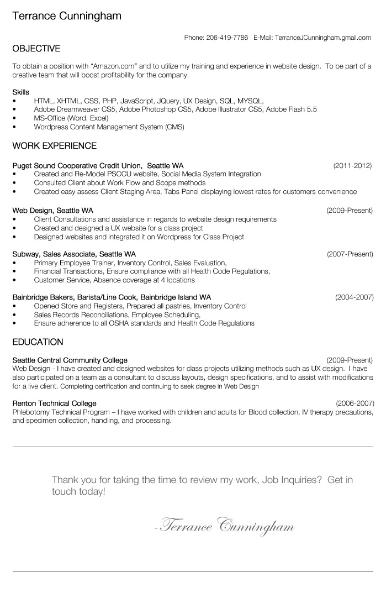

A little about Terrance Cunningham
I am Terrance Cunningham web strategist and designer, ranging from user research to visual design and front-end development.
I enrolled in the Web Design program at Seattle Central Community College were I created and designed over 10 different types of websites ranging from E-Commerce, Wordpress, to personal businesses, I strive to create immersive and accessible online experiences. Full Resume PDF Download.
